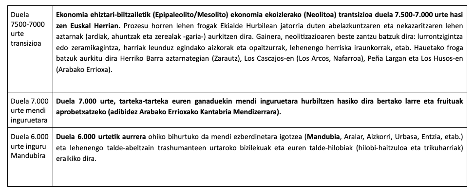
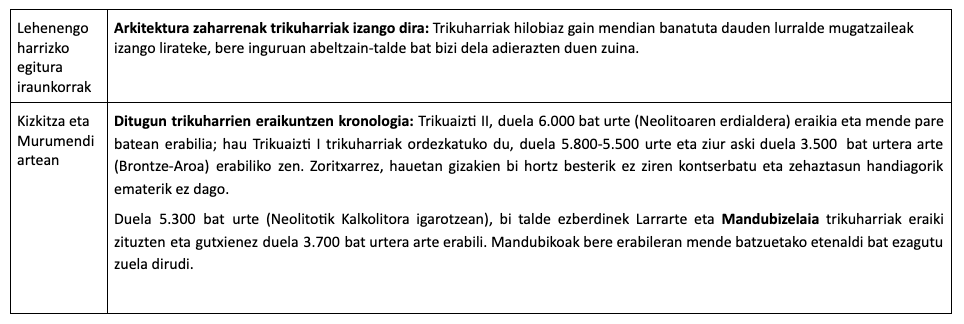
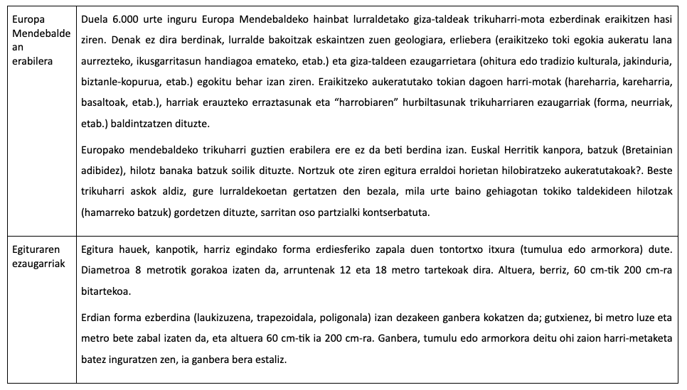

Trikuharriak Euskal Herrian
Hurrengo testuetan, Euskal Herrian izan diren Trikuharrien informazio orokorra eta hauen azalpena emango da.
Neolitoaren hasiera Euskal Herrian

Trikuharriaren kronologia

Egitura hauen aniztasuna

Diseinua eta lanaren antolaketa
Trikuaizti eta Mandubizelaiko hilobi-arkitekturak eraikitzeko inguruan (Kalteralde, Kizkitza) azaleratzen ziren basaltoak erabili ziren. Tumulua ia bakarrik harri-mota honekin egin zen, baina horrek formatu/forma egokiko harlauzak ez dituenez eskaintzen, ganberako zorua prestatzeko eta harlauzetarako kareharri tupatsuak eta arbela erabili zituzten.
Harrobi gisa erabilitako leku zehatzak ez ditugu ezagutzen, baina oso urruti joan gabe egongo dira. Harri-koskor batzuk erraz eskuragarri izango zituzten, baina ez nahikoak egitura egiteko eta geruzetatik ere atera beharko zituzten harrizko, zurezko eta hezurrezko pikotxekin, aspaldidanik muger edo suharri-meategietan (Mugarduia -Urbasa-, Mugerre -Lapurdi-, Araiko -Trebiñu-, etab.) egiten zuten bezala. Ondoren, ziur aski, harriak animalien laguntzaz mugitutako lera gisako ibilgailuetan garraiatuko zituzten.
Hilobi-arkitekturaren kokalekua hainbat irizpide jarraituz aukeratuko zuten, eta seguruenik, beste munduarekiko sinesmen ezezagunek ziotena, eta baita helburu praktiko (lana aurreztea, etab.) eta ekonomikoetan (kudeatzen zituzten eremuaren zuin gisa gainontzeko taldeek identifikatu zezaten) oinarrituta ere. Honetarako ikuseremu handiko tokiak aukeratzen zituzten eta era berean ikusgaitasuna paisaian nabarmentzen (tumulu handiak eta nabarmenak eginaz) saiatzen ziren.
Eraikuntza lanak auzolanean egingo ziren, elkarlanean, ez zen izango abeltzainen bat-bateko inprobisazioa. Denbora luzez iraungo zuten hilobi-arkitekturak hauek eraikitzeko tradizioz ikasitako jakindurian oinarrituko ziren. Gerta daiteke, pertsona gailen, ospetsu bat, eraikuntza egiteko egotea eta egingo ziren ospakizun eta errituen ardura ere edukitzea.
Sarritan, bertan hazten zen landaretzari su emanaz hasiera ematen zioten lanari. Ondoren, bertara inguratuta eta euren ezaugarrien arabera (harlauza edo harri-koskor; neurriak) multzoetan sailkatutako harriak erabiliko zituzten. Lehen urratsa ganberaren burualdeko harlauza jartzea izango zen eta bere arrimuan, ukituz, batzuetan alboko harlauza handiak lur-erreten edo zangetan sartuz tinkatuta gel zitezen.
Ganberako harlauzetatik kanporantz harri handi xamarrak teilakatuz bezala jartzen ziren egitura sendotzeko, eta hauen gainean beste batzuk txikiagoak ia ganberaren estalkia estali arte. Hauen gainean jarritakoak txikiagoak dira eta ez daude hain ondo ipinita. Harri-metaketa honi tumulu edo armorkora deitu ohi zaio. Gainera, batzuetan, kanpo aldetik tumulua inguratuz, sendotuz eta mugatuz harriak zutika jarrita izaten zituzten, harri-zirkulu edo harrespil itxura hartuz.